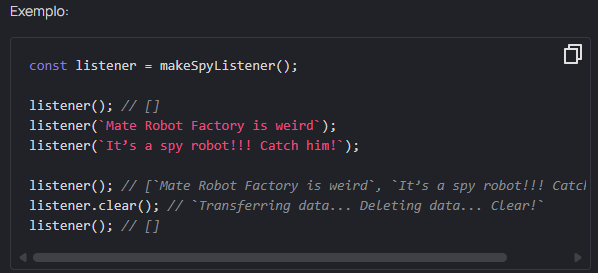

Tarefa: Spy listener
Intro
A agência de inteligência SI:7 recebeu os primeiros robôs militares da Fábrica de Robôs Mate. Devido ao sigilo total, eles não possuem o software necessário. Estes robôs vão se tornar espiões e irão ouvir e gravar tudo o que for escutado e, em caso de perigo, enviarão os dados armazenados para a sede e apagarão o disco.
Escreva uma função makeSpyListener que cria e retorna uma função listener. O listener deve funcionar da seguinte maneira:
- Se chamarmos o listener e passarmos uma string, salve-a na memória do robô
- Se chamarmos sem nenhum parâmetro, retornaremos um array de todos os dados do gravador
- Se chamarmos um método listener.clear(), limpe todos os dados e retorne uma string Transferring data... Deleting data... Clear!.
